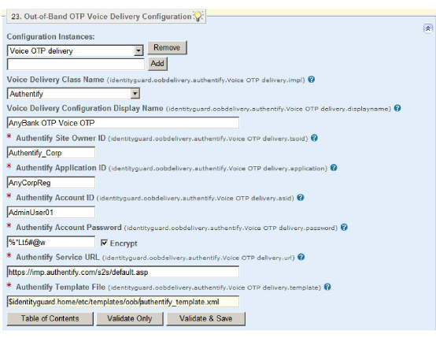

|
IdentityGuard Server 11.0 Administration Guide |
|
IdentityGuard Server 11.0 Administration Guide |
To configure the voice message service for delivery of out-of-band OTPs, use the Properties Editor.
To configure a voice message delivery service
2. On the Table of Contents, click Out-of-Band Voice Delivery Configuration.
3. In the empty field below Configuration Instances, enter a unique service name. Click Add.
You can configure more than one voice delivery service so that you can provide services for different user groups or geographic locations; give each instance a different name.
4. By default, the Voice Delivery Class Name property is set to Authentify. If you are using a different third-party voice delivery service (including TeleSign), select Custom and enter a new Java class name in the field that appears. For TeleSign, the class name is:
com.entrust.identityGuard.common.oobDelivery.otp.telesign.OTPTelesignDeliveryVoice
5. (Optional) Enter a service name in the Voice Delivery Configuration Display Name field. This name appears in the Administration interface and can also appear in your client application.
6. In the Authentify Site Owner ID field, do one of the following:
● For Authentify, enter your Authentify site ID provided when you registered for Authentify services.
● For TeleSign, enter NOT_USED.
● For another custom configuration, consult your service provider for information.
7. In the Authentify Application ID field, do one of the following:
● For Authentify, enter your Authentify application ID.
● For TeleSign, enter NOT_USED.
● For another custom configuration, consult your service provider for information.
8. In the Authentify Account ID field, do one of the following:
● For Authentify, enter your Authentify account ID. This is the user name required to access your Authentify account.
● For TeleSign or another custom configuration, enter the user name for your account.
9. In the Authentify Account Password field, do one of the following:
● For Authentify, enter your Authentify password. This is the password required to access your Authentify account.
● For TeleSign or another custom configuration, enter the password required to access your account.
10. Select the Encrypt option to have the password encrypted when it is saved.

11. In the Authentify Service URL field, do one of the following:
● For Authentify, enter the application-specific Authentify service URL.
● For TeleSign, enter a placeholder URL (for example: http://notused.not_used) so no unintended default URL is used.
● For another custom configuration, consult your service provider for information.
12. In the Authentify Template File field, do one of the following:
● For Authentify, provide the location of the Authentify XML request template. (Also see Customize the Authentify template.)
● For TeleSign, enter NOT_USED.
● For another custom service provider, provide the location of the request template. Consult your service provider for information about message size and other requirements for voice messages.
13. Click Validate & Save.
14. Log out of the Properties Editor and restart Entrust IdentityGuard and the Entrust IdentityGuard Radius proxy after you make all property changes.

 Windows
Windows